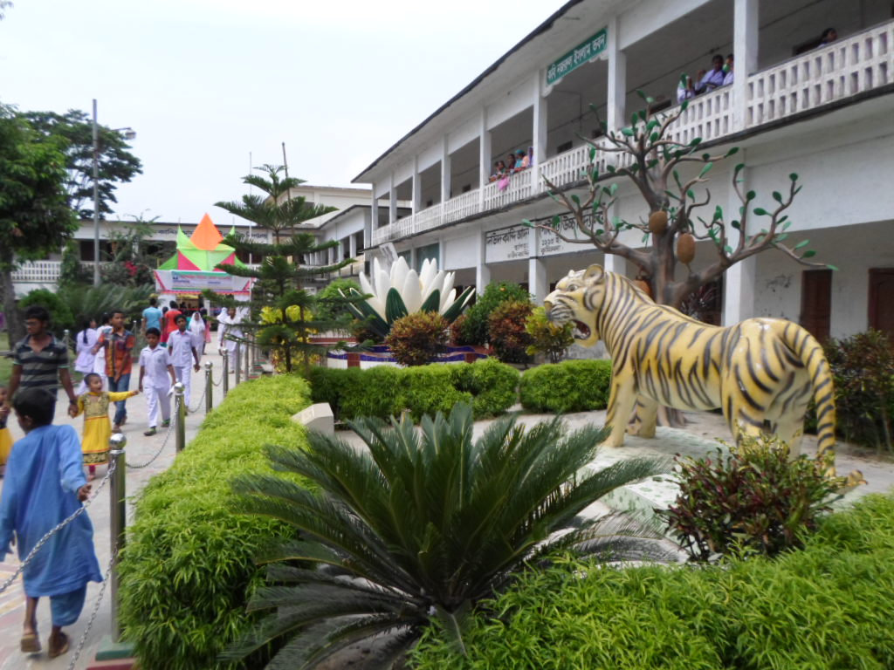
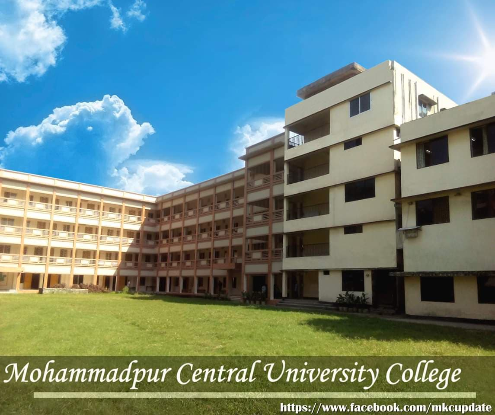

I'm a student of UIU. I live in Mohammadpur.
My home district is in Chittagong
I've completed my SSC from my home town. My School name was Daudkandi Adarsha Pilot High School.
Here's the facebook link to our School:

After SSC, I moved to Dhaka and completed my HSC from Mohammadpur Kendriya College
Here's the facebook link to our College:

Well, Computer science is all about problem solving and I think I'm good at solving problems in various creative way. I also have interest in design, development, software and hardware.
Moreover Every industry uses computers so naturally computer scientists can work in any. Problems in science, engineering, health care, and so many other areas can be solved by computers. It can give me a lot of opportunities to work on any field I want.